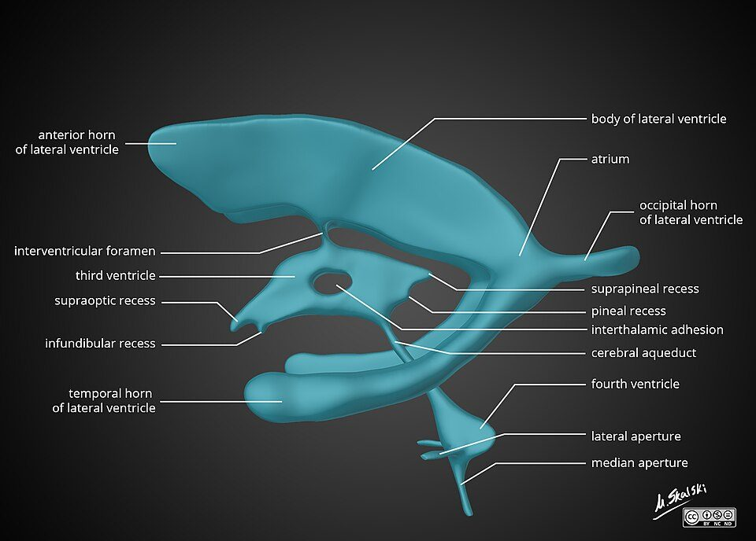

A floating brain
The brain is a soft organ, with the consistency of a custard or tofu. It is protected by the skull and by three layers of membranes, the meninges, and floats in a fluid, the cerebrospinal fluid (CSF), which cushions blows. Thanks to this buoyancy, the brain, which weighs about 1,400 grams, "weighs" only about 50 grams inside the skull and is not crushed by its own weight.
The meninges
From outside to inside:
| Layer | Features |
|---|---|
| Dura mater | Thick and tough ("tough mother"); attached to the skull; forms folds such as the falx cerebri and the tentorium cerebelli, and the venous sinuses that collect blood |
| Arachnoid | Thin, like a spider's web; beneath it lies the subarachnoid space, full of CSF and containing the main arteries |
| Pia mater | Very thin, attached to the surface of the brain; follows all its grooves |
Spaces form between the layers where blood can collect after a blow or a burst vessel:
- Extradural (epidural) haematoma: between the skull and the dura, from a torn artery after a blow; there may be a lucid interval before the person deteriorates.
- Subdural haematoma: under the dura, from torn veins. The chronic form, common in older people on anticoagulants, can appear weeks after a minor knock.
- Subarachnoid haemorrhage: almost always from a ruptured aneurysm.
The ventricles
Inside the brain there are four connected cavities filled with CSF:
- Two lateral ventricles, one in each hemisphere, C-shaped.
- The third ventricle, in the centre, between the thalami.
- The fourth ventricle, between the brainstem and cerebellum, which continues into the central canal of the spinal cord.
Cerebrospinal fluid


It is a clear fluid, like water. It is made by the choroid plexuses in the ventricles at a rate of about 500 ml a day, although at any one time there are only about 150 ml: it is renewed three or four times a day. It flows from the lateral ventricles to the third and fourth, comes out into the subarachnoid space, surrounds the brain and spinal cord and is reabsorbed into the blood in the arachnoid granulations and through lymphatic routes.
Its functions:
- Cushioning blows and movement.
- Keeping the brain's chemical environment stable.
- Clearing waste products, especially during sleep, through the glymphatic system, described in 2012.
Analysing it by lumbar puncture makes it possible to diagnose infections, haemorrhages, multiple sclerosis or Alzheimer's.
Diseases
- Meningitis: infection of the meninges. Headache, fever and stiff neck. Bacterial meningitis is an emergency.
- Hydrocephalus: build-up of CSF because its flow or reabsorption is blocked. It is treated with a shunt that drains the fluid into the abdomen.
- Idiopathic intracranial hypertension: high CSF pressure with no visible cause; risk of vision loss.
- Low CSF pressure: due to a leak (spontaneous or after a puncture); headache that comes on when standing.
- Meningiomas: tumours, almost always benign, arising from the meninges.
Sources
- Iliff JJ, et al. A paravascular pathway facilitates CSF flow through the brain parenchyma. Sci Transl Med. 2012;4:147ra111.
- Sakka L, et al. Anatomy and physiology of cerebrospinal fluid. Eur Ann Otorhinolaryngol Head Neck Dis. 2011;128:309-16.
- Blumenfeld H. Neuroanatomy through Clinical Cases. 3rd ed. Sinauer; 2021.